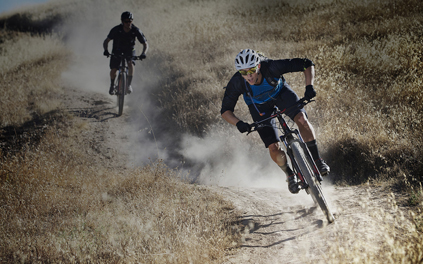
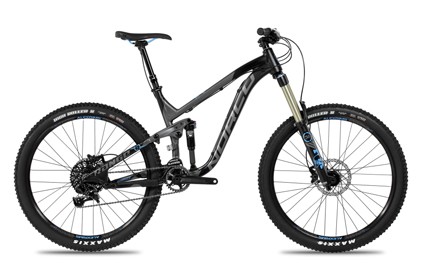

- home
- rockhopper
- bigfoot
- sasquatch
- townie
Rockhopper
Price $4580 CND

Meet The Rockhopper
Where efficiency and capability cross paths on the trail, you'll find the Rockhopper. The reasons are pretty simple. Sure, as a hardtail, it has some natural climbing ability, but what isn't so obvious is the low bottom bracket, roomy top tube, and ultra-short chain stays. In other words, it puts out a planted, confident, and snappy ride over a diverse array of terrain. It's fast on the way up, and even faster on the way down.
Whether you're a seasoned veteran or cutting your teeth on the trail, the Rockhopper Comp 29 will help you attack the trails with the confidence and finesse that comes with 29er wheels, our Trail 29 Geometry, and a durable, precise build kit.
